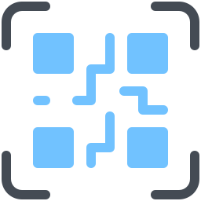
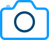
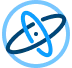
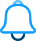

<mat-toolbar class="mat-elevation-z1">

  <div class="container">
    <div fxLayout="row" fxLayoutAlign="space-between center">

      <div>
        
      </div>

      
      <div fxLayout="row" fxLayoutGap="10px">
        <button mat-button [matMenuTriggerFor]="puginsMenu">
          Others
        </button>
  
        <button mat-button [matMenuTriggerFor]="capacitorMenu">
          Capacitor
        </button>
      </div>

      <mat-menu #puginsMenu="matMenu">

        <button mat-menu-item [routerLink]="['/captureSaveAndPlayVideos']" fxLayout="row" fxLayoutAlign="start center">
          <mat-icon style="color: gray;">videocam</mat-icon>
          <span>Capture, Save and Play Videos</span>
        </button>

        <mat-divider></mat-divider>
        <button mat-menu-item disabled fxLayout="row" fxLayoutAlign="start center">
          <span>Plugins</span>
        </button>

        <button mat-menu-item [routerLink]="['/jsQR']" fxLayout="row" fxLayoutAlign="start center">
          <span>jsQR</span>
        </button>
        
        <button mat-menu-item [routerLink]="['/ZXing']" fxLayout="row" fxLayoutAlign="start center">
          <span>ZXing</span>
        </button>

      </mat-menu>

      <mat-menu #capacitorMenu="matMenu">
        
        <button mat-menu-item [routerLink]="['/documentation']" fxLayout="row" fxLayoutAlign="start center">
          <span>Documentation</span>
        </button>

        <mat-divider></mat-divider>

        <button mat-menu-item [routerLink]="['/features', 'qr-code']" fxLayout="row" fxLayoutAlign="start center">
          
          <span>QR Code</span>
        </button>

        <button mat-menu-item [routerLink]="['/features', 'camera']" fxLayout="row" fxLayoutAlign="start center">
          
          <span>Camera</span>
        </button>

        <button mat-menu-item [routerLink]="['/features', 'accelerometer']" fxLayout="row" fxLayoutAlign="start center">
          
          <span>Accelerometer</span>
        </button>
        
        <button mat-menu-item [routerLink]="['/features', 'file-system']" fxLayout="row" fxLayoutAlign="start center">
          
          <span>FileSystem</span>
        </button>

        <button mat-menu-item [routerLink]="['/features', 'geolocation']" fxLayout="row" fxLayoutAlign="start center">
          
          <span>Geolocation</span>
        </button>

        <button mat-menu-item [routerLink]="['/features', 'network']" fxLayout="row" fxLayoutAlign="start center">
          
          <span>Network</span>
        </button>

        <button mat-menu-item [routerLink]="['/features', 'notifications']" fxLayout="row" fxLayoutAlign="start center">
          
          <span>Notifications</span>
        </button>

      </mat-menu>
      
    </div>
  </div>


</mat-toolbar>

<ng-content></ng-content>